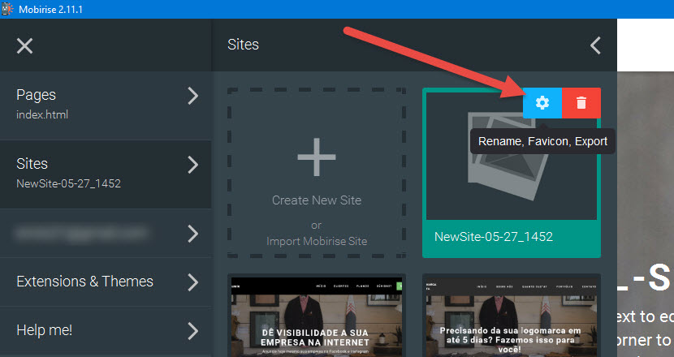
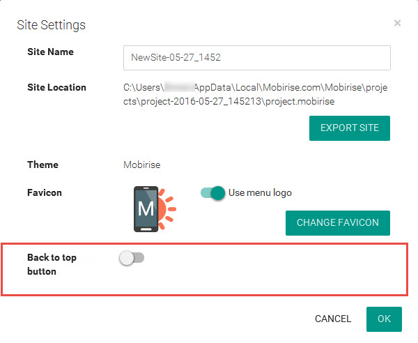
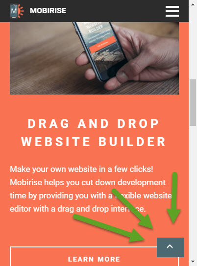

<h2>Back to top plugin</h2>
<p>Created by <a href="http://uid.me/shzlot" target="_blank">ShZlot</a></p>
<p>&nbsp;</p>
<h3>To use it, go to "Site Settings" and enable</h3>

<h4>Finding "Site Settings"</h4>
<p></p>

<h4>Enabling "Back top top" plugin</h4>
<p></p>

<h4>Preview in website</h4>
<p></p>